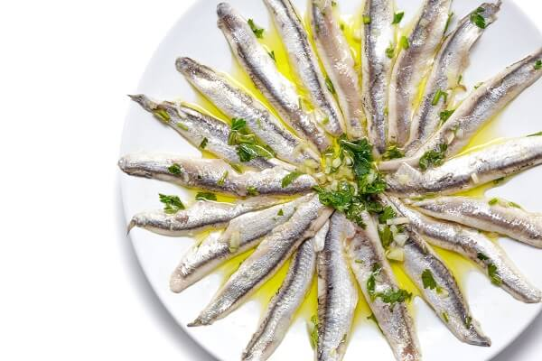

Boquerones en vinagre

Los boquerones en vinagre son fantásticos. Esa especie de escabeche simplificado,
deja los boquerones con un punto de acidez exquisito, encajando a la perfección en
cualquier aperitivo o ronda de tapas para tomar junto a una cerveza o un vino.
- 1 kg de boquerones frescos
- 4 dientes de ajo
- 200 ml de vinagre blanco
- 100 ml de agua
- Aceite de oliva virgen extra español
- Perejil
- Sal
- Lo primero es limpiar los lomos de los boquerones. Enjuágalos con cuidado y sécalos con papel de cocina absorbente, presionándolos con el papel por encima y por debajo para que suelten toda la sangre que pueda quedar.
- Colócalos en una fuente plana, con la piel hacia abajo. No importa que algunos boquerones queden encima de otros, lo importante es que el marinado los cubra a todos. Añade el agua con un poco de sal y el vinagre y cubre la fuente con film o papel de aluminio.
- Deja reposar durante unas 3 horas en la nevera. Este marinado es lo que cocinará los boquerones. Pasado ese tiempo, la carne del boquerón debería estar blanca, pero si no es así, déjalos una hora más.
- Una vez terminado el marinado, hay que congelar los boquerones para evitar riesgo de anisakis, el famoso parásito de los pescados. Escúrrelos bien, mételos en una fiambrera y cúbrelos con aceite de oliva español. Déjalos en el congelador durante 48 horas.
- Pasado el tiempo de congelación, sácalos y déjalos descongelar en la nevera hasta el día siguiente.
- Saca los boquerones de la fiambrera y ponlos de nuevo en una fuente o un plato plano, retirando el exceso de aceite, que al estar frío estará gelificado.
- Pica los ajos y un poco de perejil fresco. Mézclalos en un bol con unas cuantas cucharadas de AOVE de España y viértelo todo sobre los boquerones. Si ves que el aceite no los cubre, añade un poco más hasta que así sea.